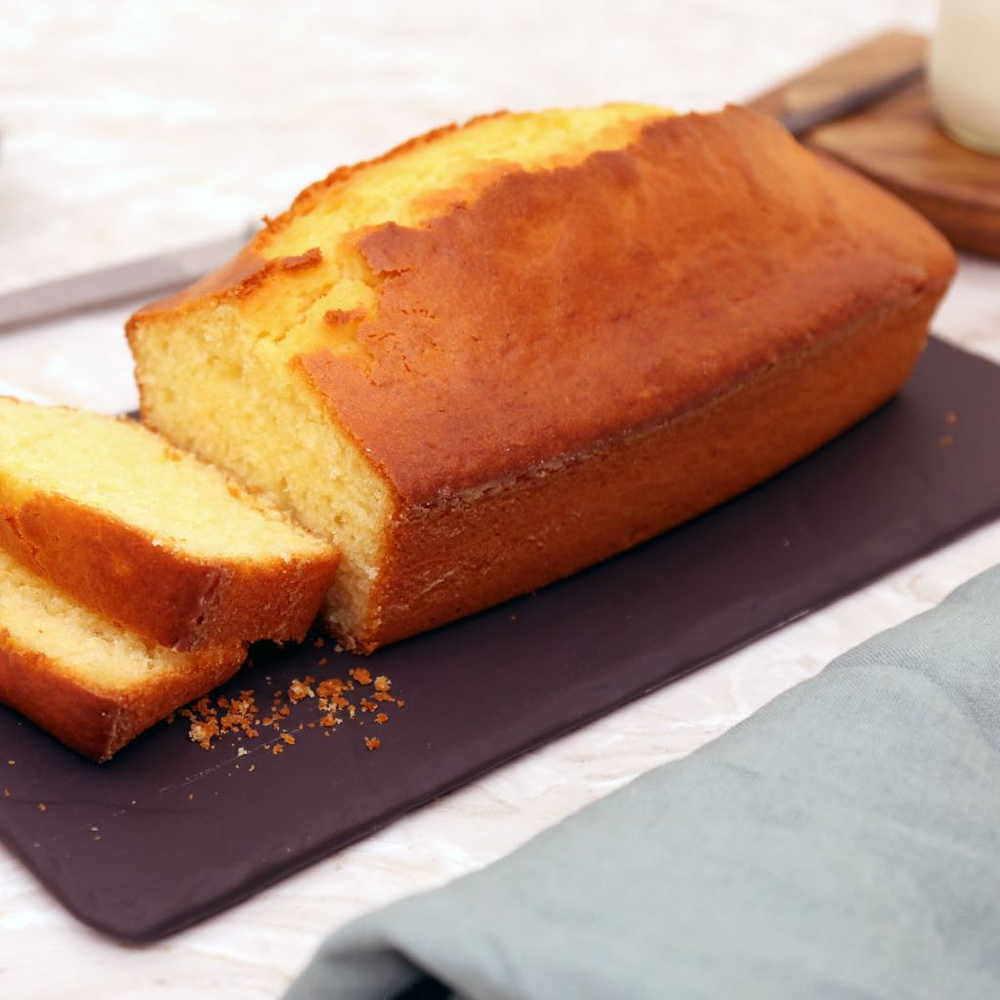

CAKE
Ingrédients
- 250g de farine
- 03 oeufs
- 2 ou 1.5 pot d'yaourt
- 1 pot d'huile
- 1càc de levure chimique
- 1 pot d'yaourt ou lait

Préparation
- Mettre dans une terrine la farine tamisée, le sel et la levure
- Blanchir les jaunes d'oeufs, le sucre
Battre jaune d'oeufs + sucre (banane purée)
Verser peu à peu l'huile + yaourt ou lait - Mélanger I + II avec spatule en bois
- Faire un neige ferme les blancs d'oeufs Ajouter le neige ferme dans la pâte
Four : 180°C
Cuisson : 45mn
I + II + IV